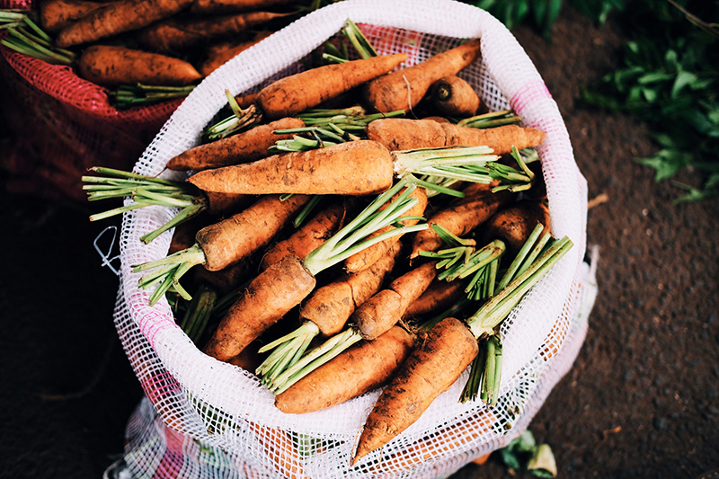

Family Owned & Operated
Since Jerry and Jeannie Appleseed founded the first Organic Farms farm in 2012, nearly 60 family farms across the Midwest have become proud affiliates.
Read More

Our Mission
Organic Farms is more than a company. We strive to change the conversation around food, family and health.
Read More